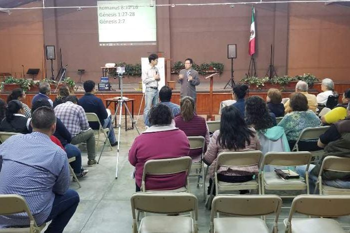

함께 보내심을 받아
작은 교회이지만 손은 아메리카 대륙 끝까지 닿습니다. 목사님이 직접 나가십니다.
섬기는 곳
가까운 중남미
저희 교회의 선교는 주로 중남미에서 이루어집니다. 이덕신 목사님께서 해마다 여러 차례 직접 다녀오시며, 오랫동안 그렇게 해 오셨습니다. 올해 9월에도 브라질에서 말씀을 전하셨습니다.
하시는 일은 대부분 가르치는 일입니다. 현지 목회자와 교회 지도자들이 며칠에 걸쳐 모여 훈련을 받습니다. 긴 탁자에 둘러앉아 성경과 공책을 펴 놓고 배우고, 배운 것을 각자의 교회로 가지고 돌아갑니다.
남은 저희는 기도와 헌금으로 그 일을 함께 짊어집니다. 목사님이 돌아오시면 온 교회가 그곳 소식을 함께 듣습니다.

선교 현장
그동안 다녀온 곳
-

2026년 9월
브라질
현지 교회와 함께 드린 저녁 집회. 자리가 가득 찼고 찬송 소리가 컸습니다.
-

2025년
파라과이
현지 목회자와 교회 지도자들을 위한 며칠간의 훈련 세미나.
-

2025년
코스타리카
현지 선교지 교회와 함께한 시간. 그곳 목사님과 사모님, 그리고 자녀들을 만났습니다.
-

2019년, 2020년
멕시코
현지 목회자와 성도들을 위한 집회. 여러 차례에 걸쳐 다녀왔습니다.
함께하기
함께할 수 있는 세 가지
-
기도로
지금의 기도 제목을 청해 주십시오. 가정이나 소그룹에서 함께 기도해 주시면 됩니다.